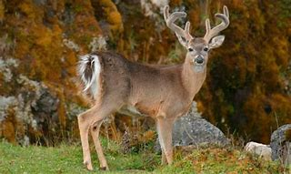

Hay muchas cosas que tomar en cuenta en cuanto a la cacería de venados.
Una de ellas es la especie, no todas las especies de venados se deben cazar, hay una especie en concreto que es bastante popular en la cacería, estoy hablando de:
El venado de cola blanca (Odocoileus virginianus) es un mamífero de la familia Cervidae. Algunas de sus características más destacadas son: Pelaje: Su pelaje varía según la estación. En verano, es de color marrón rojizo, mientras que en invierno se torna gris. Cola: La punta de su cola es blanca, lo que le da su nombre y le sirve como señal de alarma1. Cornamenta: Los machos presentan cornamentas ramificadas que se inclinan hacia atrás. Patas: Tienen patas cortas y poderosas que les permiten moverse rápidamente y con gracia. Sus cascos están diseñados para moverse en cualquier tipo de terreno. Hábitat El venado de cola blanca habita en llanuras y sierras ricas en vegetación. Se adapta a diversos ambientes, desde bosques densos hasta áreas abiertas. Razones por las que son cazados Los venados de cola blanca son cazados principalmente por dos razones: Deporte: La caza deportiva es una actividad popular en muchas regiones, especialmente en Texas, donde los venados de cola blanca son los principales animales de caza mayor. Carne: También son cazados por su carne, que es apreciada en muchas culturas. Amenazas y Conservación Además de la caza, los venados de cola blanca enfrentan amenazas como la pérdida y fragmentación de su hábitat, lo que ha llevado a una disminución en sus poblaciones en algunas áreas
